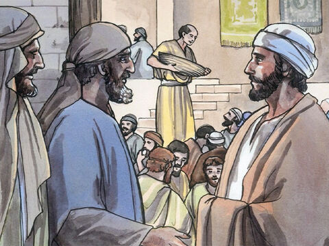
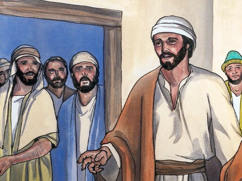
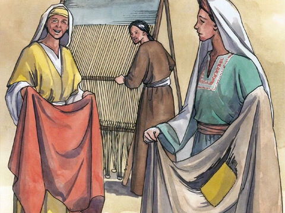
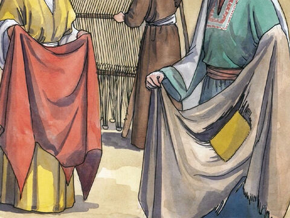
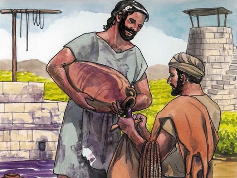
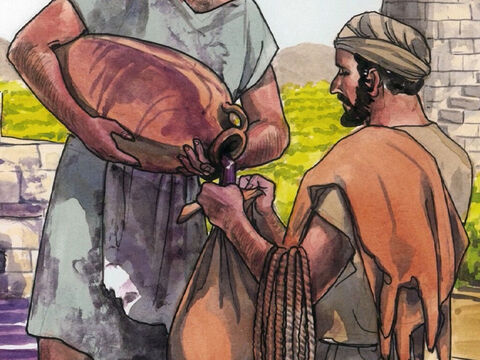

Lord Jesus Questioned About Fasting
Then came to him the disciples of John, saying, Why do we and the Pharisees fast oft, but thy disciples fast not?
And Jesus said unto them, Can the children of the bridechamber mourn, as long as the bridegroom is with them? but the days will come, when the bridegroom shall be taken from them, and then shall they fast.
No man putteth a piece of new cloth unto an old garment, for that which is put in to fill it up taketh from the garment, and the rent is made worse.
Neither do men put new wine into old bottles: else the bottles break, and the wine runneth out, and the bottles perish: but they put new wine into new bottles, and both are preserved.
Matthew 9:14-17
- 
- 
- 
- 
- 
- 